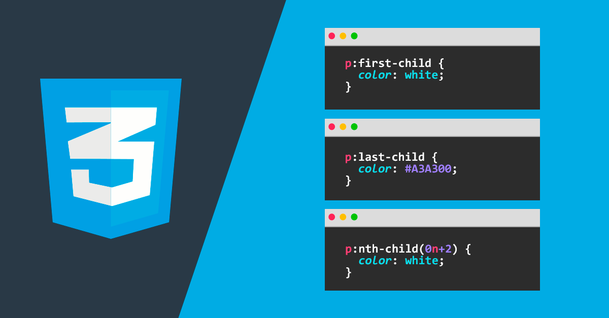
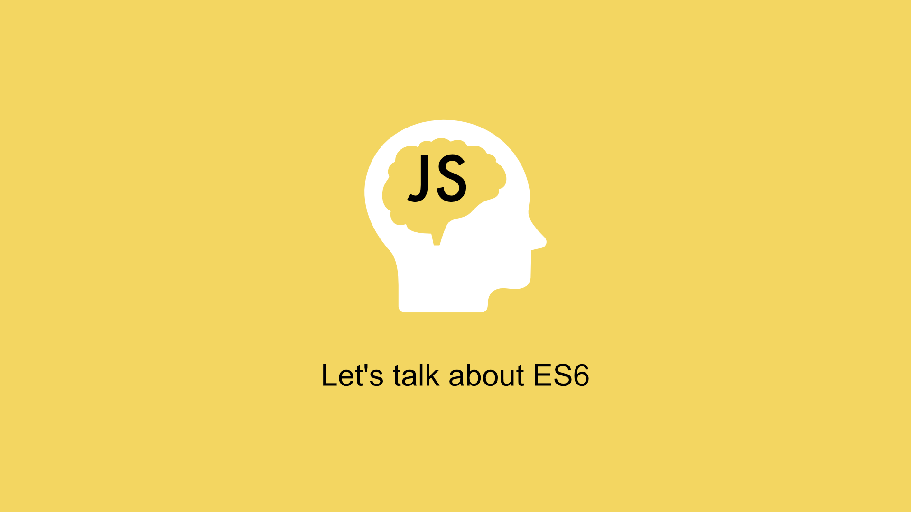

- 
- 
Elige un tema
Información Alumno
Nombre Alumno: Joquebeth Silam Cruz Armenta
Grupo: 4"F"
Semestre: 4to
Submodulo: Desarrolla Aplicaciones Moviles
Nombre del Docente: José Antonio Gómez Hernandez
Nombre Alumno: Joquebeth Silam Cruz Armenta
Grupo: 4"F"
Semestre: 4to
Submodulo: Desarrolla Aplicaciones Moviles
Nombre del Docente: José Antonio Gómez Hernandez
HTML, que significa Lenguaje de Marcado para Hipertextos (HyperText Markup Language) es el elemento de construcción más básico de una página web y se usa para crear y representar visualmente una página web. Determina el contenido de la página web, pero no su funcionalidad. Otras tecnologías distintas de HTML son usadas generalmente para describir la apariencia/presentación de una página web (CSS) o su funcionalidad (JavaScript).
Las etiquetas HTML son fragmentos de texto rodeados por corchetes angulares < >, que tienen funciones y usos específicos y se utilizan para escribir código HTML.Las etiquetas o tags son la forma de escribir código HTML.
Las etiquetas se pueden dividir en dos categorias como lo son:
HTML5 es la última versión de HTML. El término representa dos conceptos diferentes:
Hojas de Estilo en Cascada (del inglés Cascading Style Sheets) o CSS es el lenguaje utilizado para describir la presentación de documentos HTML o XML, esto incluye varios lenguajes basados en XML como son XHTML o SVG. CSS describe como debe ser renderizado el elemento estructurado en pantalla, en papel, hablado o en otros medios.
Adobe Dreamweaver es una aplicación en programa de estudio (basada en la forma de estudio de Adobe Flash) que está destinada a la construcción, diseño y edición de sitios, vídeos y aplicaciones Web basados en estándares. Creado inicialmente por Macromedia (actualmente producido por Adobe Systems) es uno de los programas más utilizados en el sector del diseño y la programación web por sus funcionalidades, su integración con otras herramientas como Adobe Flash y, recientemente, por su soporte de los estándares del World Wide Web Consortium.
WAMP es el acrónimo usado para describir un sistema de infraestructura de internet que usa las siguientes herramientas:
Un archivo *.js, es un archivo de texto plano que contiene scripts de Javascript, y que puede, por tanto, ser modificado con cualquier editor de textos. Es ejecutado generalmente por un navegador web. Los archivos .js guardan funciones y variables globales que se ejecutarán en la página web pudiendo llamar a sus funciones desde cualquier subpágina sin tener que incrustar scripts en cada una de ellas y ahorrando así código. Para quien tenga idea de construcción de páginas web, podría decirse que es similar a un archivo CSS pero en lugar de clases y estilos este archivo genera scripts.

PHP, acrónimo recursivo en inglés de PHP Hypertext Preprocessor (procesador de hipertexto), es un lenguaje de programación de propósito general de código del lado del servidor originalmente diseñado para el desarrollo web de contenido dinámico. Fue uno de los primeros lenguajes de programación del lado del servidor que se podían incorporar directamente en un documento HTML en lugar, de llamar a un archivo externo que procese los datos. El código es interpretado por un servidor web con un módulo de procesador de PHP que genera el HTML resultante
MySQL es un sistema de gestión de bases de datos relacional desarrollado bajo licencia dual: Licencia pública general/Licencia comercial por Oracle Corporation y está considerada como la base datos de código abierto más popular del mundo, y una de las más populares en general junto a Oracle y Microsoft SQL Server, sobre todo para entornos de desarrollo web.